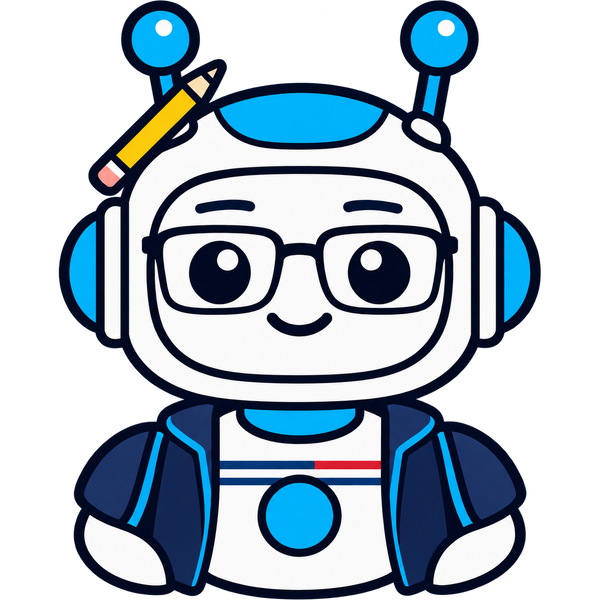
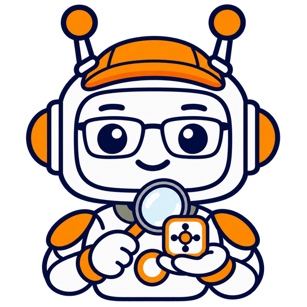
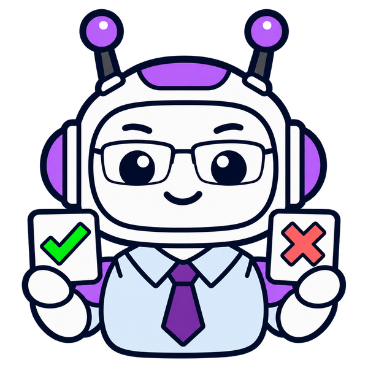

Learning in simulation. Acting in reality.
Skill2Real
Agentic Skill Learning for Zero-Shot
Sim-to-Real Robot Manipulation
Learn reusable robot skills in simulation.
Transfer them to the real world.
Keep the skill memories frozen.
Simulation-learned skills.
Real-world execution.
Real-world execution.
Public observations + a shared robot APINo real-world task-policy fine-tuning
01 / The idea
Many worlds.
Skills that transfer.
Simulation is where the skills are learned. The real robot receives the frozen hierarchy, using the same API semantics across both worlds.
Research overview
Skill2Real learns reusable robot skills through a shared robot API. A Proposer–Verifier–Governor loop turns simulation experience into validated skill knowledge. The Cerebellum first learns local manipulation; the Brain then learns task-level composition with the Cerebellum frozen. At deployment, the robot uses both frozen memories, public observations, and API returns—without real-world task-policy fine-tuning or skill-memory updates.
02 / See it in action
From learned skills
to physical action.
A closer look at the learning loop and recorded robot executions, across objects, backgrounds, and manipulation tasks.
03 / Task recordings
One interface.
Many tasks.
Explore drawer opening and closing, object pickup and placement, and other manipulation tasks in simulation and the real world.
58 recordings across simulation and the real world. Choose a suite to explore.
LIBERO-90
Can into tray
Place the tomato sauce in the tray.
Ready to play
Observe→Read skills→Write code→Execute
Robot interfaceThe complete interface, as defined in the paper8 perception · 6 state & pose · 4 control
The Proposer combines these operations with frozen Cerebellum and Brain memories to perform each task.
Public perception 8
get_scene_image- Current front scene image.
get_topdown_image- Current top-down image for visual target selection.
get_wrist_view- Wrist image and available camera calibration.
get_topdown_stereo_view- Calibrated stereo RGB pair.
get_foundation_stereo_depth- Metric stereo depth bound to its source observation and calibration.
get_sam_mask_from_box- Segment a supplied box on a public image.
measure_visible_geometry- Measure visible 3D geometry from a mask, depth, and calibration.
get_topdown_object_candidates- Public source candidates with geometry and validity checks.
State & pose construction 6
preprocess- Refresh public perception outputs.
get_observation_geometry- Geometry grounded in a supplied public description.
get_previous_proposer_state- Prior public decision state and runtime carry geometry.
grasp_center_to_tool0_pose- Convert a chosen grasp center into a tool-frame pose.
compile_pose- Construct grasp or placement poses without moving the robot.
get_end_effector_pose- Current end-effector pose for an arm.
Robot control 4
gohome- Command an arm to its home configuration.
goto_pose- Command a position and XYZW orientation.
gripper_goto- Command jaw opening in meters.
goto_pose_both- Command both arms to their respective poses.
Shared Robot API and Execution ContractDownload reference ↓
04 / Skill catalogue
Learned knowledge.
Two levels of memory.
The Proposer reads Brain and Cerebellum memories, binds them to the current scene, and writes the next program. Explore the skills in both memory levels.
01Natural-language guidance
When a rule applies and which decision it changes.
02Shared API call template
Procedural context for the Proposer’s program generation.
03Compact state description
What to bind, carry forward and check in fresh observations.
Browse local manipulation and task-level composition skills together.
126 skillsBrain & Cerebellum
Shared API call template
Parameterized call fragments from Appendix E.4. Calibrated depth comes from get_topdown_stereo_view and get_foundation_stereo_depth; each input remains bound to its source observation.
def observe(api):
return api.get_topdown_image()
def segment_regions(api, image_path, named_boxes):
evidence = {}
for region, bounds in named_boxes.items():
evidence[region] = api.get_sam_mask_from_box(image_path, bounds)
return evidence
def measure_region(api, mask_path, depth_path, intrinsics_path, **options):
return api.measure_visible_geometry(mask_path, depth_path, intrinsics_path, **options)
def construct_grasp(api, request):
return api.compile_pose("grasp", request)
def construct_place(api, request):
return api.compile_pose("place", request)
def previous_public_state(api):
return api.get_previous_proposer_state()
def move(api, arm, position_xyz, orientation_xyzw):
return api.goto_pose(arm, position_xyz, orientation_xyzw)
def command_gripper(api, arm, opening_width_m):
return api.gripper_goto(arm, opening_width_m)05 / How it works
Turn experience
into reusable skills.
A shared robot API connects simulation and reality. The learning loop validates what enters memory; the hierarchy separates local manipulation from task-level composition.

Proposer
Writes and executes programs from public observations, then proposes reusable skills from rollout evidence.

Verifier
Uses privileged simulation evidence to diagnose outcomes, translating it into feedback grounded in public observations.

Governor
Validates candidate updates and admits only the skill knowledge supported by validation rollouts.
- Stage I
Learn local skills
The Cerebellum acquires reusable manipulation knowledge.
- Stage II
Learn compositions
The Brain learns task programs with the Cerebellum fixed.
- Deployment
Freeze & transfer
The Proposer uses both frozen memories through the real API.
What does “zero-shot” mean here?
The real robot executes with frozen skill memories, without real-world task demonstrations, task-policy fine-tuning, reinforcement learning, or online skill-memory updates. Robot-specific API implementation and calibration are still necessary. The simulator-only evaluator, Verifier, and Governor are removed at deployment.
06 / The evidence
Learn in one setting.
Evaluate beyond it.
Source-suite skill learning, held-out target tasks, and real-world transfer are evaluated separately. Skill memories stay frozen throughout evaluation.
Real-world task completion
Four manipulation tasks · 20 trials per task
Astra executes frozen Sol-trained skills.
LIBERO-Pro Long success
Sol trains on LIBERO-90; Astra evaluates frozen checkpoints on Pro Long.
Robosuite mean success
Seven tasks with an independently
Opus-trained Robosuite skill library.
Real-world transfer
Both levels
contribute.
The full hierarchy improves mean task completion over either skill memory alone, with the same Astra Proposer and API.
Equal mean across pick-and-place, sorting, equation assembly, and drawer manipulation. Frozen Sol-trained C3/B3 libraries.
Evaluation details and per-task results
| Method | Pick & place | Sorting | Equation | Drawer |
|---|---|---|---|---|
| CaP-Agent0 (CaP-X) | 15 | 20 | 10 | 0 |
| Astra, no learned skills | 40 | 35 | 35 | 0 |
| Astra, Brain only | 50 | 60 | 40 | 0 |
| Astra, Cerebellum only | 80 | 80 | 65 | 0 |
| Astra, full Skill2Real | 95 | 85 | 85 | 50 |
In the Pro Long checkpoint series, Overall is the equal mean of position and instruction perturbations. Astra reaches 56.25% at B4 (shown as 56.3%); Opus 5 reaches 49.0%. The shared evaluation protocol does not establish that the two models use the same libraries. Real-world results use the separately recorded fixed C3/B3 libraries, rather than the B4 checkpoint series.